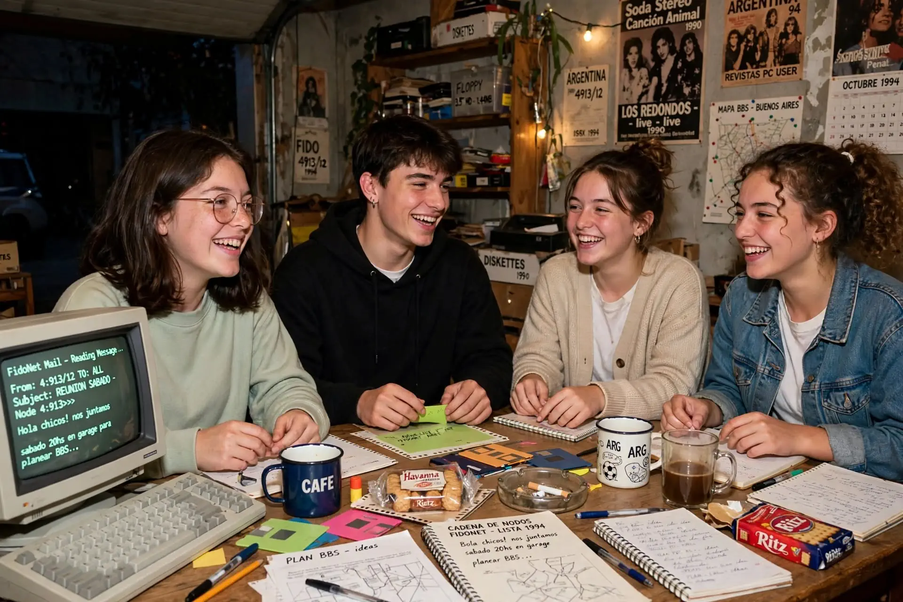
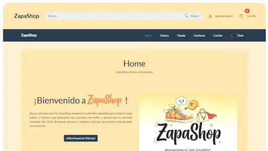
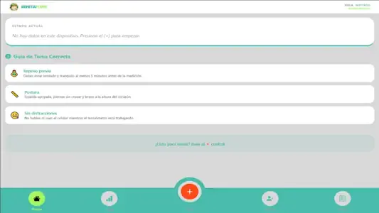
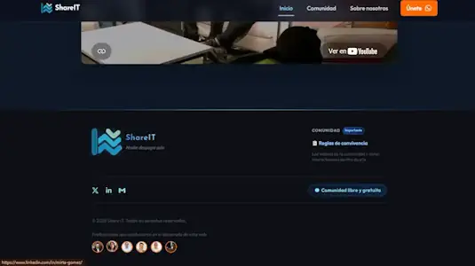
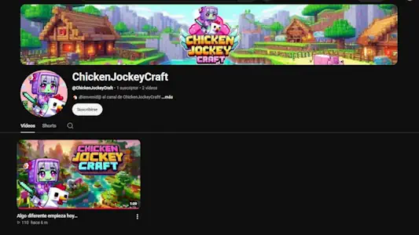
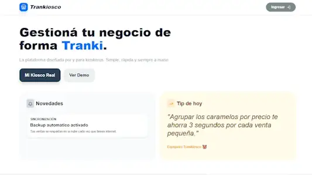
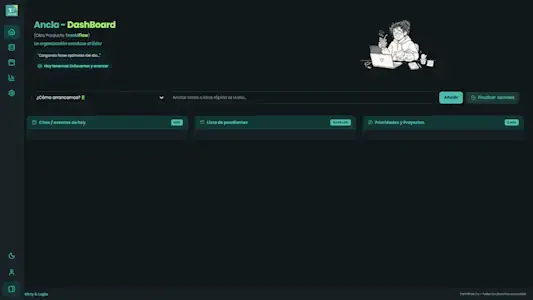
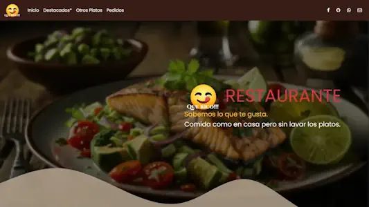
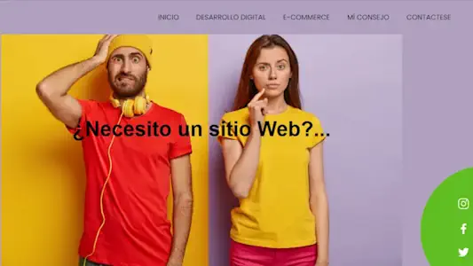
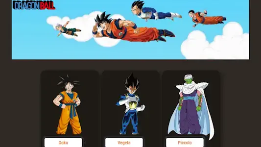

Desarrolladora Web, Website Builder y Consultora Digital con más de 25 años de trayectoria resolviendo problemas reales, conectando tecnología, datos y diseño web con profesionalismo y eficacia.
Una historia de pasión ininterrumpida por la tecnología y los mundos virtuales

Mis comienzos en la tecnología se remontan a la era pre-Internet de los años 90, participando activamente en la mítica red FidoNet, mi point en esa red era: 4:900/151. En aquel entonces, la optimización de recursos era crítica: nos reuníamos con otros usuarios a diseñar de forma artesanal complejas cadenas de búsqueda con operadores lógicos que luego enviábamos por correo offline a compilar en servidores remotos. Esa experiencia no solo me dio bases sólidas de lógica y sintaxis, sino que me enseñó el valor de la colaboración comunitaria; una camaradería técnica que en Argentina coronábamos en los famosos FidoAsados, donde la comunidad digital pasaba de la pantalla a la vida real.
Dejé de trabajar cuando me casé y crié a mis hijos. ellos también tienen trabajos relacionado a tecnología, heredaron mi amor por las computadoras, hoy son profesionales y me siento muy orgullosa de los dos. Y ojo, la tecnología y los (MMORPG) siempre fueron parte de casa: con mis hijos compartimos juegos, hemos estado en el mismo clan dentro de Priston Tale, jugando los tres en red. También tuvimos uno o varios servidores propios en los que, hasta el día de hoy, nos juntamos a jugar Minecraft.
Ahí la redstone la manejo como quiero (¡aunque odie a los creepers que rompen mis construcciones, los odio con toda el alma, jajaja!). Tenemos hasta nuestro propio Discord, donde nos conectamos a hablar mientras jugamos. Reconozco que soy muy mala peleando, pero mis hijos me enseñaron unos trucos y mejoré bastante; de hecho, ellos están fascinado con cómo manejo los circuitos de redstone.
Los tiempos fueron cambiando, y cuando mis hijos crecieron, volví a ser una profesional dependiente, con un trabajo fijo, horas fijas... en fin, era más confiable así. Trabajé en una empresa de investigación de mercado, lo que me dio una visión de los datos muy clara. Es por eso que desarrollé una gran destreza para interpretar datos, es algo que se me da muy bien.
Sin embargo, el espíritu independiente volvió a pesar más y decidí barajar de nuevo. Pero debía actualizarme: IT evoluciona a pasos agigantados, y en pandemia comencé mi tiempo de actualización. Realicé cursos en varias áreas: Big Data, Data Analysis, programación en Python, Java, JavaScript, React y Node.js. Eso me dio un bagaje impresionante para todo lo que quería hacer.
Por eso, este año me decidí y armé mi marca personal: TrankiFlow.app, con apps resolutivas, cursos, asesoría a negocios y emprendedores.
Y he aquí un resumen de mi vida... esta soy yo: Mirta Gómez.
Producciones principales desarrolladas con React, Node y trabajo colaborativo

Tienda virtual desarrollada como proyecto integral con enfoque en experiencia de usuario responsive y gestión de catálogo.

Aplicación interactiva de salud y registro de datos orientada a la usabilidad y visualización clara de métricas personales.

Proyecto colaborativo en equipo con enfoque en arquitectura UI/UX y desarrollo web. Participación oficial en los créditos del sitio.
Proyectos en curso, ideas en pausa estratégica y futuros lanzamientos (*Under Construction*)

Proyecto lúdico e interactivo inspirado en servidores y mundos virtuales personalizados de Minecraft.

Herramienta de gestión simplificada orientada al comercio minorista y control rápido de stock.

Desarrollo para el registro/orgenizacion personal de tareas diarias.
Prácticas, maquetaciones comerciales y aplicaciones frontend interactivas

Maquetación web enfocada en gastronomía, con estructura visual atractiva, menú y adaptabilidad comercial.

Proyecto basado en datos reales de We Are Social y Hootsuite sobre el desarrollo y progreso digital en Argentina.

Aplicación frontend interactiva desarrollada con React Vite y Bootstrap, consumiendo datos de una REST API externa.
Formación oficial completada en la Agencia de Habilidades para el Futuro
Colaboración activa en squads multidisciplinarios, integración armónica de roles y sincronización de objetivos comunes.
Canales de diálogo claros, asertivos y fluidos con clientes, pares y líderes de proyecto durante todo el ciclo de vida.
Enfoque analítico y empático para destrabar inconvenientes técnicos u operativos bajo metodologías ágiles.
Flexibilidad ante cambios de requerimientos tecnológicos y rápida integración a nuevos entornos de desarrollo.
Cabe destacar que cursé la capacitación completa en dos oportunidades (2023) por requerimiento normativo, sumando una revalidación y actualización integral en 2024.
Validación oficial de competencias técnicas en desarrollo, nube y datos
¿Tenés un proyecto en mente, necesitás soporte tecnológico o querés conectar? Elegí tu vía preferida.